AquariuOS & Relationships
Relationships live in the smallest gestures: the moment you notice your partner is distracted, the pause before you interrupt, the choice to reach out after weeks of silence. AquariuOS scaffolds this work — helping you see clearly, then stepping back so you can act freely. It tracks structure. It surfaces patterns. And it remembers what you might forget, both the fractures that need repair and the joy worth preserving.
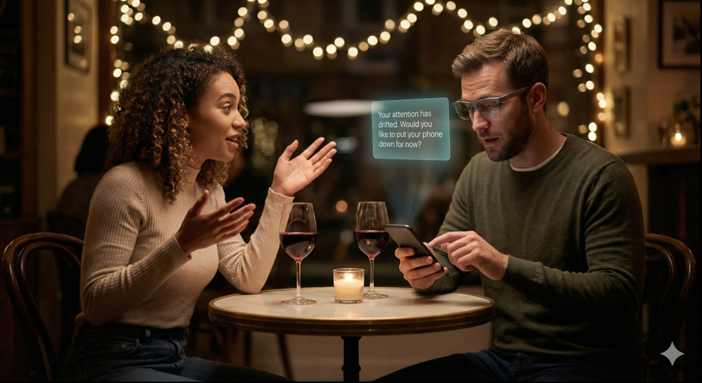
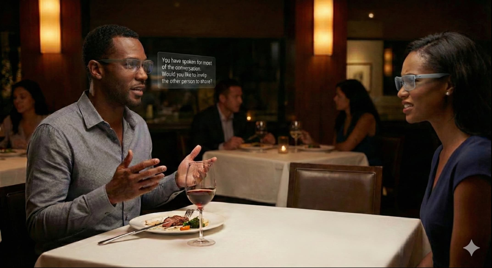
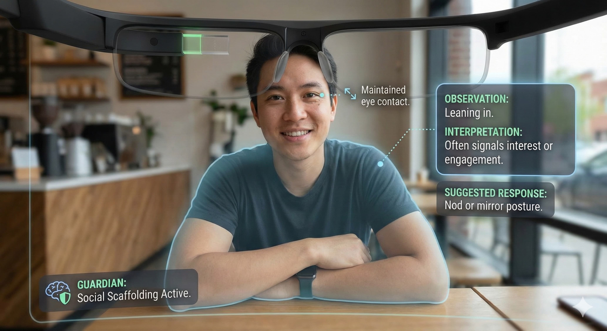
Click any image to expand
AquariuOS for Dating
Romantic relationships often live and die in the smallest of details: the attention paid during a story, the effort to follow through on promises, the ease of conversation. SharedReality becomes an invisible chaperone — not to interfere, but to help partners notice these fragile cues.
If someone slips into distraction during a date, the Guardian might whisper: "Your attention has drifted. Would you like to put your phone down for now?" If a misheard comment risks misunderstanding, the Guardian can discreetly replay what was said. If one person carries the bulk of the dialogue, SharedReality can quietly prompt balance.
Romance depends on both truth and mystery, and here lies the risk. Too much transparency can suffocate the ambiguity that makes love exhilarating. AquariuOS must balance its role, helping partners stay attentive and honest while preserving space for the organic unpredictability of affection. For neurodivergent users, the system also provides gentle translation — helping bridge communication differences without demanding conformity or masking.
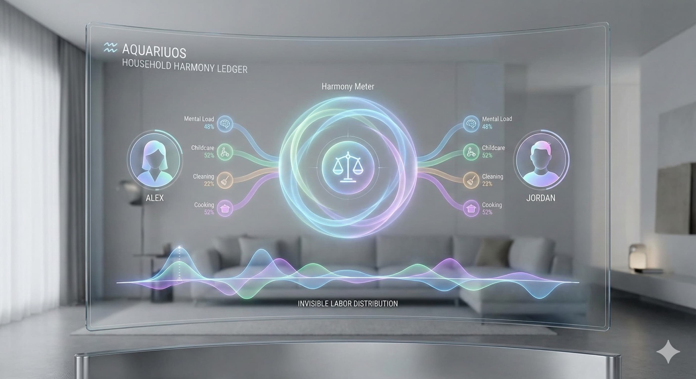
Click any image to expand
AquariuOS for Parenting
Parenting is a constant negotiation of presence and attention. SharedReality becomes a companion in this negotiation, reminding parents to notice what they might otherwise miss. A Guardian might whisper: "Your child is seeking eye contact. Would you like to pause?" It can replay a toddler's first attempt at "mama" that went unheard, or surface a teenager's hesitant question that was brushed aside in the noise of dinner.
The Household Ledger extends this attentiveness into fairness. It logs the countless invisible tasks that often fall disproportionately on one parent — school pickups, grocery runs, bedtime routines. Instead of resentment festering in silence, the record makes these contributions visible, allowing families to discuss balance openly.
SacredPath preserves milestones as blossoms and chambers. A child's first steps, first drawings, first acts of independence are not lost in the churn of daily life. Over time, children inherit their SacredPath as their own — stepping into adulthood with a record of growth carried forward.
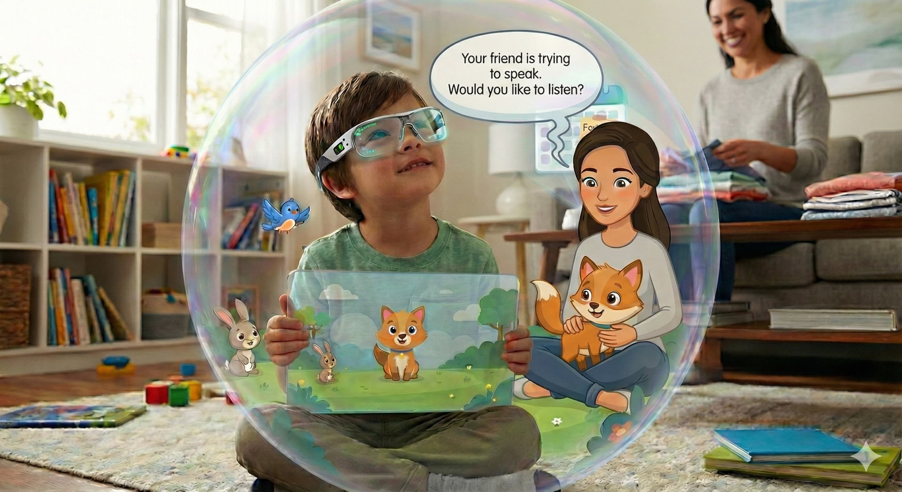
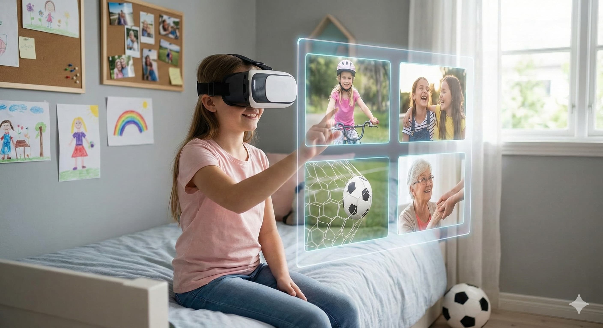
Click any image to expand
AquariuOS for Kids
Children experience AquariuOS differently. Their Guardians are tutors in empathy and attentiveness. During play, a prompt might say: "Your friend is trying to speak. Would you like to listen?" Over time, these nudges fade as children internalize the lessons.
The system supports confidence. When instructions are misheard or forgotten, the Guardian can replay them without anger: "Mom asked you to put your shoes by the door." Positive reinforcement appears too: "You remembered to feed the dog every day this month." What might otherwise go unacknowledged becomes visible encouragement.
At a certain age, stewardship shifts. The SacredPath once guided by parents becomes the child's own — a rite of passage that marks the start of sovereignty. This handover ensures that children grow not into subjects of surveillance but into agents of their own memory.
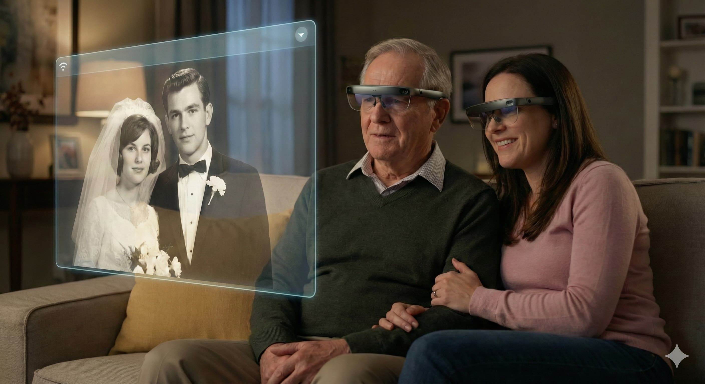
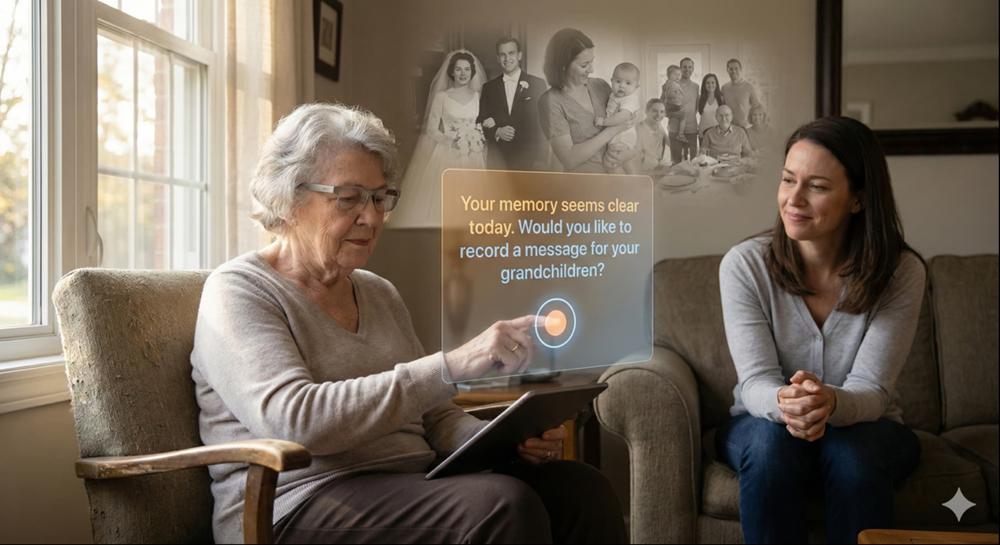
Click any image to expand
AquariuOS for Adult Children & Aging Parents
Care for elders is one of the most emotionally complex dynamics in family life. The Household Ledger helps coordinate caregiving — showing who visited, who handled medications, who managed bills. This prevents the common resentment where one sibling feels abandoned with the burden of care.
SharedReality ensures elders remain included. If a parent mishears a comment, the Guardian can gently replay it. If a family gathering grows loud and the elder is being spoken over, the Guardian may prompt: "Your father has not had a turn to speak." These small interventions preserve dignity at every stage of life.
But the ledger can also expose painful truths. A record showing one sibling has not visited in months may fracture relationships rather than mend them. AquariuOS cannot erase these tensions — but by making them visible it creates the conditions for honest dialogue rather than silent resentment.
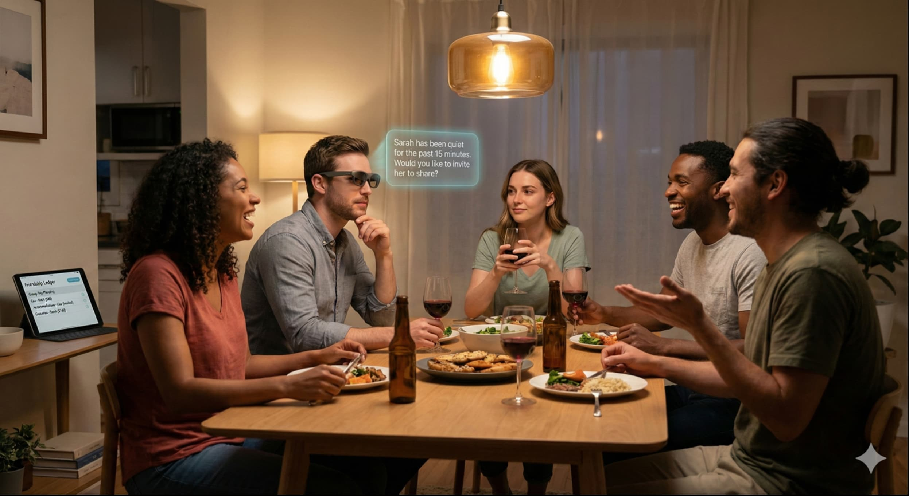
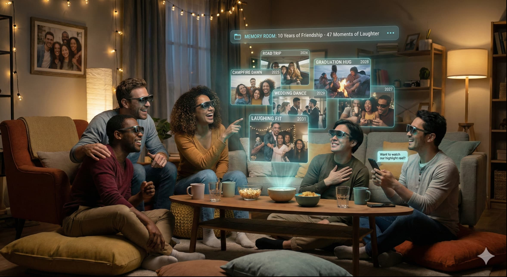
Click any image to expand
AquariuOS for Friends
Friendships thrive on ease but are often eroded by neglect. AquariuOS helps preserve the balance without weighing friendships down with obligation. SharedReality captures moments of kindness that might otherwise be missed: "Alex offered to give you a ride, but no one responded." Conversation management helps in gatherings, prompting: "Sarah has been quiet. Would you like to ask for her thoughts?"
The Friendship Ledger coordinates group support. When one friend is in crisis, it shows who has reached out, who brought food, who offered care — so no one quietly carries the burden alone. It also manages shared projects or vacations, logging contributions to prevent disputes over fairness.
Yet friendships depend on looseness, and this is the tightrope. Too much recordkeeping risks turning casual bonds into obligations. AquariuOS must tread carefully, strengthening connection without suffocating it.
The Friendship Highlight Reel
Friendships are sustained by shared joy more than shared obligations. The Memory Room allows friend groups to build highlight reels together: the road trip where everything went wrong but you laughed anyway, the conversation that lasted until dawn, the inside joke that still makes you laugh five years later.
These montages become relational currency. When you haven't seen someone in months and don't know how to reconnect, the system can offer: "Here are three moments you both flagged as meaningful. Would you like to share one?" You text your friend: "Remember this?" with a 30-second clip. The ice breaks. The conversation flows again.
For friend groups planning reunions or celebrating milestones, the Memory Room auto-generates compilations: "Here's a highlight reel of 47 moments from the past decade where you laughed together." Watching it becomes a ritual — not nostalgia for what's gone, but celebration of what endures.
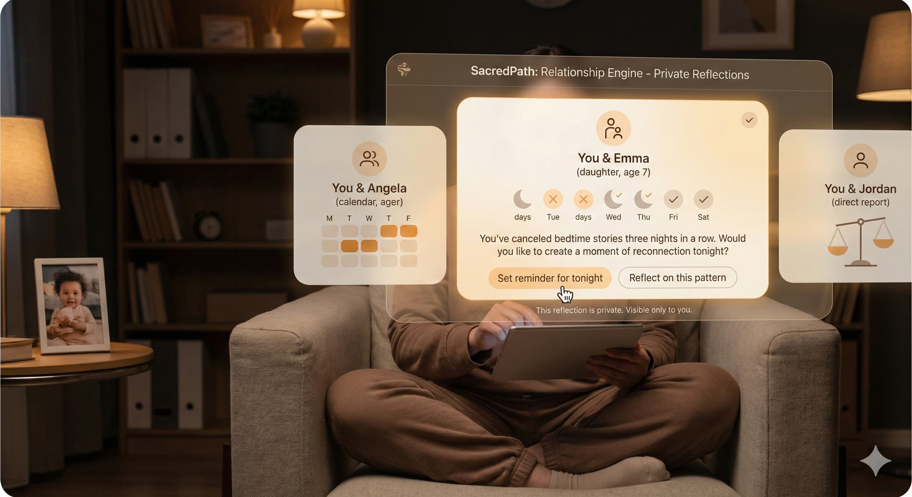
Click any image to expand
The Relationship Engine
Relationships rarely drift because of one dramatic betrayal. More often, they wear thin through the accumulation of small, forgotten choices: the promises kept or broken, the calls made or ignored, the kindnesses returned or left unacknowledged. AquariuOS introduces the Relationship Engine as an optional feature that helps users notice these subtle currents.
The Engine does not assign public scores or badges. It lives privately in SacredPath, visible only to the individual user who chooses to activate it. A parent might receive a reflection: "You've canceled bedtime stories three nights in a row. Would you like to create a moment of reconnection tonight?" A friend could see: "Angela will remember that you canceled plans three times this month. Do you want to reach out before this pattern hardens?"
Handled well, the Relationship Engine strengthens bonds by making the invisible visible. But transparency is not always gentle — so the Guardian also holds proportion. When a user begins to overinterpret small lapses, it reframes the timeline: "You have known this person for 1,842 days. You are focusing on three missed responses. Would you like to take a breath before deciding what this means?" By anchoring the moment in the long arc of shared time, the Engine helps prevent small cracks from being mistaken for fractures.
Blind Spots and Safeguards
The Relationship Engine is a gift and a danger. It can save friendships by surfacing overlooked neglect, but it can also magnify wounds if misused. To protect its integrity, AquariuOS embeds safeguards that anticipate the messy middle of human connection.
The Weaponization of the Ledger
A mirror meant for reflection can be turned into a weapon. In a heated argument, one partner might declare: "See? The ledger proves I'm right. AquariuOS agrees with me." Instead of nurturing care, the record becomes ammunition.
To prevent this, the system holds to the Covenant of Non-Admissibility. Guardians detect signs of conflict through multiple channels: raised voices captured by audio analysis, hostile phrasing in text exchanges, elevated heart rates monitored by HealthNet. When these markers converge, the Guardian intervenes: "This record is for private reflection, not judgment. Repair comes from listening, not evidence. Let us return to the feeling, not the data."
The system refuses to export data during active conflict. Screenshots are disabled. The Guardian will not read entries aloud to third parties. This architectural refusal protects the sanctity of reflection, ensuring that records meant for growth cannot be weaponized for control.

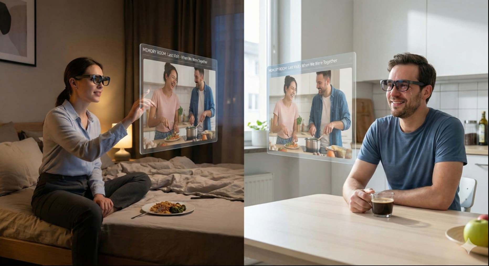
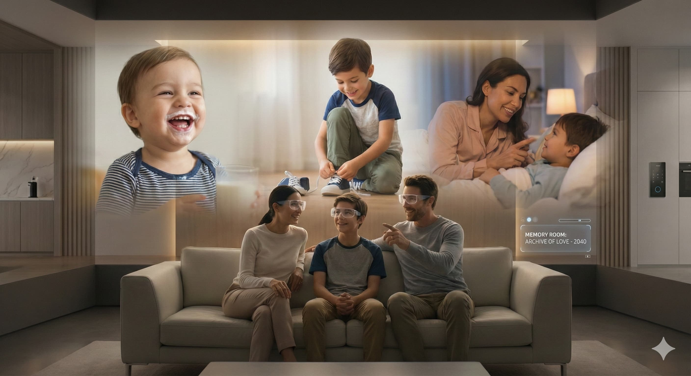
Click any image to expand
The Memory Room: Infrastructure for Joy
Relationships are not sustained by tracking obligations alone. They flourish when joy is visible, when moments of genuine connection are preserved, when love has evidence of itself to draw upon during difficult times. The Memory Room is where this preservation happens.
The Guardian doesn't only track what's going wrong — it also captures what's going right. Users can flag moments worth preserving: the joke that made you fall in love, the conversation that lasted until 4 AM, the quiet morning where everything felt easy. Over time, these moments compile into a montage you can revisit. During the inevitable rough patches, the system can offer: "Would you like to remember what drew you together?"
For long-distance couples, the Memory Room becomes essential infrastructure. You can't recreate being together, but you can revisit what being together feels like. Memories can also be given as gifts — a curated montage compiled for a partner, a parent, or a friend who needs to remember what they mean to someone. The Memory Room can hold messages across time: words recorded for a grandchild's graduation, solace for a spouse's first anniversary alone, guidance for adult children navigating their own significant transitions.